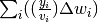
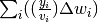

PointByPointVCorrection dialog.
Table of Contents
| Name | Direction | Type | Default | Description |
|---|---|---|---|---|
| InputW1 | Input | MatrixWorkspace | Mandatory | Name of the Sample workspace. |
| InputW2 | Input | MatrixWorkspace | Mandatory | Name of the Vanadium workspace. |
| OutputWorkspace | Output | MatrixWorkspace | Mandatory | Name of the output workspace. |
Divides the data spectra by the matching vanadium spectra according to the following formula:

where  is the signal in the sample workspace,
is the signal in the sample workspace,  the
count in the corresponding vanadium bin,
the
count in the corresponding vanadium bin,  the bin
width,
the bin
width,  the integrated data count and
 the sum of the sample counts
divided by the vanadium counts multiplied by the bin width.
the integrated data count and
 the sum of the sample counts
divided by the vanadium counts multiplied by the bin width.
This leads to a normalised histogram which has unit of counts, as before.
In order to minimise sudden jumps in the data caused by 0 counts in the corresponding vanadium spectrum it is worth considering smoothing the Vanadium spectrum using SmoothData v1 prior to using it in this algorithm.
The input workspaces have to have the following in order to be valid inputs for this algorithm.
This is normally not a problem unless the setup of the instrument has been changed between recording the Vanadium and the sample datasets.
Categories: Algorithms | Diffraction\Corrections | CorrectionFunctions\SpecialCorrections